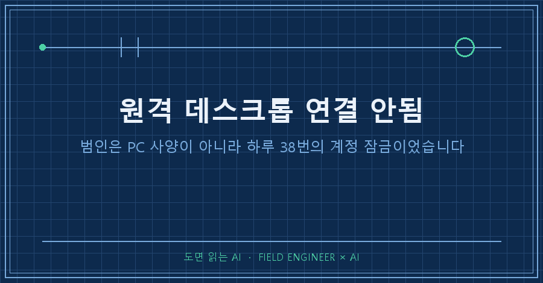
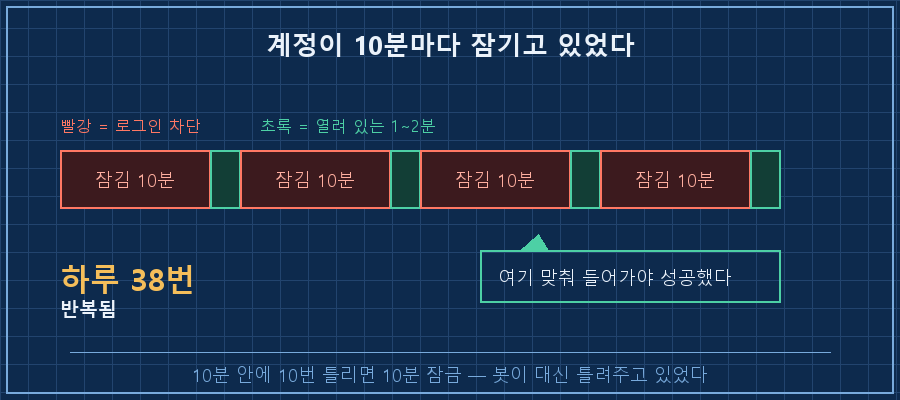
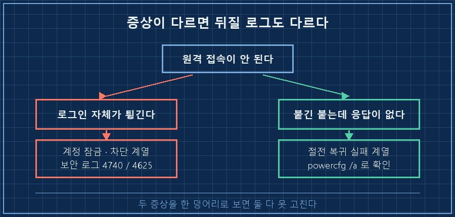
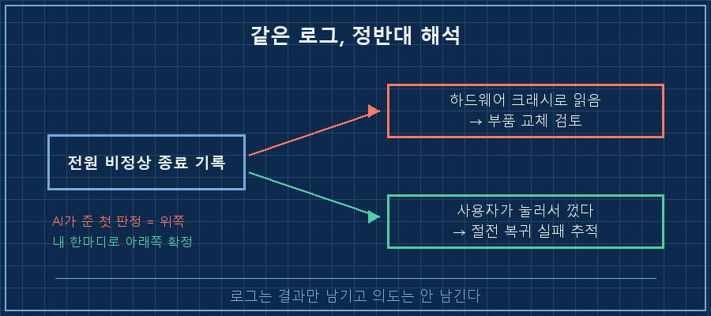

밖에서 집에 켜둔 PC에 붙으려는데 로그인이 계속 튕겼어요. 어쩌다 한 번 들어가지면 이번엔 화면이 먹통이고요.
원격 데스크톱 연결 안됨 증상이 나면 저는 늘 PC 사양부터 의심했는데, 이번엔 사양이 완전히 무죄였습니다. 결론부터 적을게요. 원인은 두 개였고 둘 다 성능과 상관없었어요. 하나는 계정 잠금, 다른 하나는 절전에서 못 깨어나는 문제였습니다.
2026년 9월 기준 윈도우 10이고, 집에 켜둔 PC를 밖에서 원격으로 쓰는 구조면 그대로 적용돼요. 확인은 전부 윈도우 기본 도구로 되고 설치할 건 없습니다.
제 일은 공장 설비 제어예요. 15년쯤 했습니다. 장비가 안 돌면 전원부터 신호까지 순서대로 짚는 게 몸에 뱄는데, 이번엔 그 습관이 저를 엉뚱한 데로 데려갔어요.
1. 사양은 전부 멀쩡했어요
AI한테 "이 PC 자원을 전수로 훑어달라"고 시켰는데, 죄다 정상이었습니다.
| 항목 | 실측 | 판정 |
|---|---|---|
| CPU | 부하 10~64% | 정상 |
| 메모리 32GB | 사용률 26.5% (23.3GB 여유) | 정상 |
| SSD 1TB | 상태 Healthy, 715GB 여유(77%) | 정상 |
| 배터리 | 설계 57,000mWh / 실제 58,100mWh = 102% | 신품급 |
| 블루스크린 덤프 | 파일 자체가 없음 | 커널 크래시 아님 |
배터리가 설계 용량보다 더 나오는 걸 보고 허탈했어요. 몇 년 쓴 노트북이 이 정도면 하드웨어를 의심할 이유가 없죠..
그래서 질문을 바꿨습니다. "뭐가 고장 났나" 대신 "누가 로그인을 방해하나"로요.
2. 계정이 10분마다 잠기고 있었습니다
보안 이벤트 로그를 열자마자 답이 나왔어요. 로그온 실패가 최근 6시간에 8,775건이었습니다.
계정 잠금 이벤트(ID 4740)는 그날 하루에만 38회였고요. 잠긴 시각을 뽑아보니 간격이 소름 끼치게 일정했습니다.
17:27:44
17:16:03
17:04:34
16:53:59
16:42:52
16:30:54
16:18:35 ← 10분 35초 ~ 12분 19초 간격으로 반복윈도우 기본 정책이 10분 안에 10번 틀리면 10분 잠금이거든요. 풀리고 1~2분 만에 다시 잠겼다는 뜻이에요. 로그인 가능한 창이 10분에 1~2분뿐이었던 겁니다.

누가 두드리고 있었냐면, 원격 접속 포트가 인터넷에 그대로 열려 있었어요. 60초만 추적했는데 서로 다른 나라의 IP 8개가 동시에 붙어 있더군요.
연결 수신 1,947 건
인증 성공 3 건 ← 이 3건도 전부 집 안에서 들어온 것봇이 아이디·비밀번호를 무한정 넣어보는 중이었고, 제 계정은 그 실패 횟수 때문에 도어록처럼 잠겨 있던 겁니다. 비밀번호가 뚫린 게 아니라 잠금 정책이 저를 막고 있던 상황이었어요.
조치는 한 줄이었습니다. 전 세계(Any)를 향해 열려 있던 방화벽 규칙을 집 안 대역으로 좁혔어요.
# 원격 데스크톱 인바운드 규칙을 집 내부망으로 제한
Get-NetFirewallRule -Direction Inbound |
Where-Object { $_.DisplayGroup -match 'Remote Desktop|원격 데스크톱' } |
Set-NetFirewallRule -RemoteAddress LocalSubnet밖에서 들어올 통로는 개인용 VPN 툴로 따로 뒀습니다. 적용 순간이 로그에 이렇게 찍혔어요.
17:09~17:27 분당 12~16건 (두드리는 중)
17:28 1 건 ← 방화벽 적용
17:29 이후 0 건60초 재추적에서 외부 IP는 0개, 계정 잠금 상태도 그날 처음 "잠김 아님"으로 바뀌었어요.
3. 로그인은 되는데 화면이 먹통인 건 다른 문제였어요
여기서 끝난 줄 알았는데 아니었어요. 접속은 되는데 응답이 없는 증상은 따로 있었습니다.
로그를 보니 PC가 절전에서 깨는 과정에 서비스 여덟 개가 동시에 30초씩 타임아웃을 먹고 있었어요. 로그온이 끝나기까지 2분 36초가 걸렸습니다. 정상이면 몇 초예요. 그걸 못 기다리고 전원 버튼을 길게 눌러 끈 적이 두 번 있었고요.
문제는 절전을 이미 꺼뒀다는 거였습니다. 전원 옵션에서 "안 함"으로 다 바꿔놨는데도 계속 들어갔어요. 이유는 이거였습니다.
사용할 수 있음 : 대기 모드(S0 저 전원 유휴), 최대 절전 모드
사용할 수 없음 : S1, S2, S3 (펌웨어에서 미지원)요즘 노트북에 흔한 모던 스탠바이 전용 장비였던 겁니다. 옛날식 절전(S3)이 아예 없고, 이 방식은 전원 옵션의 절전 시간 설정을 무시한 채 자기 판단으로 들어가요. "안 함"으로 바꿔도 소용이 없었던 이유죠.
레지스트리에서 이 기능 자체를 끄고 재부팅했더니 목록이 이렇게 바뀌었습니다.
사용할 수 있음 : 최대 절전 모드
사용할 수 없음 : S1, S2, S3, S0 저 전원 유휴, 하이브리드 절전, 빠른 시작"사용할 수 있음"에 있던 항목이 "사용할 수 없음"으로 넘어간 것, 이게 성공 판정 기준이에요. 이 확인을 안 하면 적용됐는지 알 방법이 없습니다.

4. 그대로 따라 하는 확인 순서
전제조건: 윈도우 10/11, 관리자 권한 파워셸. 2026년 9월 기준이고 추가 설치는 없습니다.
1. 로그 용량부터 키운다. 이게 1번인 이유가 있어요. 제 경우 드라이버 하나가 7일간 8만 건을 쏟아부어 시스템 로그의 99.5%를 차지했고, 정작 사고 직전 기록은 밀려 나간 뒤였습니다.
2. 잠금 이벤트를 센다. Get-WinEvent로 보안 로그의 ID 4740(계정 잠금)과 4625(로그온 실패)를 뽑습니다. 하루 수십 건이면 그게 답이에요.
3. 열려 있는 통로를 센다. 공유기 포트포워딩 목록을 눈으로 훑으세요. 저는 여기서 원격 접속 포트가 4개 열려 있는 걸 봤습니다.
4. 절전 지원 목록을 본다. powercfg /a 한 줄이면 이 장비가 어떤 절전을 쓰는지 나옵니다. 모던 스탠바이 전용이면 전원 옵션 설정은 믿지 마세요.
확인 방법: 2번의 잠금 건수가 0으로 떨어지고, 4번 목록에서 절전 항목이 "사용할 수 없음"으로 넘어갔으면 끝난 겁니다.
5. AI가 로그를 거꾸로 읽은 대목
이 글에서 제일 남는 장면은 따로 있습니다.
AI가 전원 관련 오류 로그 두 건을 잡고 "하드웨어 크래시"로 판정했어요. 근거도 그럴듯했고요. 그런데 그 두 건은 제가 응답이 없어서 전원 버튼을 길게 눌러 끈 기록이었습니다.
제가 "그거 내가 손으로 껐다"고 한마디 하자 진단이 통째로 뒤집혔어요. "PC가 죽었다"에서 "PC가 응답을 안 해서 내가 끌 수밖에 없었다"로요.

기계 로그는 결과만 적어두지 의도를 안 적어둡니다. 로그를 통째로 던져놓고 답을 기다리는 것보다, 내가 그날 뭘 했는지 한 줄 보태주는 게 훨씬 빨라요. 그 한 줄이 부품 교체 검토를 통째로 날려줬습니다!
하나 더요. 정리하는 김에 공유기의 자동 개방 규칙을 싹 지우려다 멈췄습니다. 네 건 중 세 건이 제가 쓰는 VPN의 직결 통로였거든요. 남겨둔 포트 하나도 VPN이 죽었을 때 쓸 예비 경로고요..
미리 답해두면 좋을 세 가지
Q. 비밀번호를 복잡하게 바꾸면 해결되나요?
잠금은 안 풀려요. 계정 잠금은 "누가 맞혔나"가 아니라 "몇 번 틀렸나"로 걸리거든요. 봇이 계속 두드리면 실패 횟수는 그대로 쌓이고, 못 들어가는 건 저입니다. 통로를 막는 게 먼저예요.
Q. 포트 번호를 기본값 말고 다른 걸로 바꿔두면 안전하지 않나요?
저도 그렇게 믿고 몇 대를 바꿔뒀는데, 열린 포트를 훑고 다니는 쪽에선 번호가 몇 번이든 상관없어요. 실제로 번호를 바꿔둔 것들도 똑같이 밖에서 접속 가능한 상태였습니다. 번호 변경은 숨긴 게 아니라 위치만 옮긴 거예요.
Q. 절전을 완전히 꺼도 괜찮나요?
상시 전원을 꽂아두고 원격으로만 쓰는 PC면 괜찮습니다. 대신 배터리로 들고 다니는 노트북이면 되돌리세요. 덮개를 닫아도 안 꺼지니까 가방 안에서 계속 돌아갑니다.
정리하면 고칠 건 두 개였는데, 제가 뒤진 곳은 사양표와 배터리와 디스크였어요. 전부 "정상"이라는 답만 돌아왔죠. 원격 접속이 안 될 때 사양부터 펴보는 습관은 이번에 버렸습니다. 로그인이 튕기는 것과 화면이 멎는 것은 아예 다른 고장이라는 것도요. 혹시 지금 원격 데스크톱 연결 안됨으로 고생 중이시라면, 보안 로그의 잠금 건수부터 세어보시겠어요?
밟은 순서를 더 자세히 적어둔 건 makefield.ai에 있습니다.
태그: #원격데스크톱연결안됨 #원격데스크톱로그인안됨 #계정잠김해제 #RDP보안설정 #원격접속안될때 #절전모드원격접속 #모던스탠바이해제 #윈도우이벤트뷰어 #윈도우로그확인 #PC원격제어 #AI로PC점검 #AI에게일시키기 #홈네트워크보안 #포트포워딩정리 #도면읽는AI